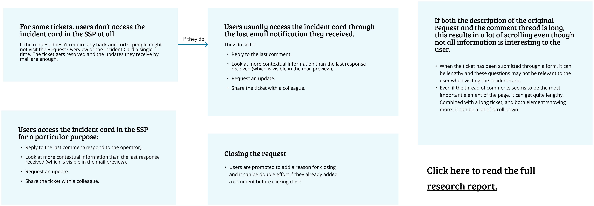
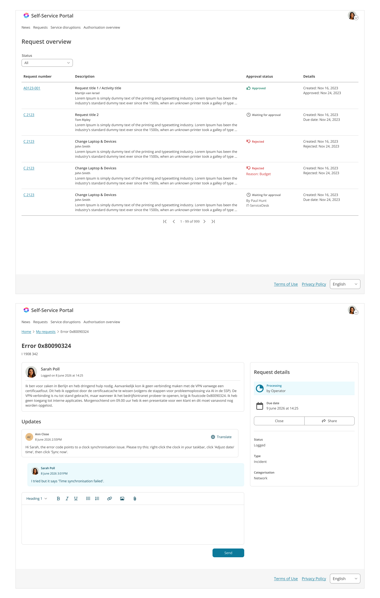

The journey may restart in email.
A notification can bring someone directly into a request. The detail page should orient them without requiring a trip through the overview.
Design response → Make each request understandable on its own.Giving employees a clearer path from service request to resolution.
A redesign of My Requests and the Incident Card, built around three questions: Where is my request? What’s happening? What can I do next?
Explore the designNo matching requests. Try another title or request number.
Showing all 4 requests.
01 / THE CHALLENGE
A service portal is a place people return to when something is still unresolved. Every unclear status or buried update adds another layer of uncertainty.
This redesign explores the part of enterprise service management that begins after submission: finding an existing request, understanding its progress, and taking the next action.
The design challenge sits across two connected surfaces: My Requests, for orientation, and the Incident Card, for context and action.
People need recognizable information, without remembering a ticket number.
A status label needs enough context to explain what is happening and who acts next.
Reading a long thread or repeating a closing explanation gets in the way of a simple task.
THE ENTERPRISE REALITY
Different organizations expose different statuses, fields, and actions. A cleaner interface has to survive those differences.
Make the experience predictable, even when the underlying settings change.
02 / DISCOVERY FRAMEWORK
The starting artifacts point to a useful shift: design around the reason for returning, rather than around the fields in a ticket.
A proposed mix of frequent and occasional portal users across different customer configurations.
Method
Moderated interviews and task walkthroughs in each participant’s own setup, with screen sharing where permitted.
Questions
What triggers a return visit? How is a request recognized? What makes a next step clear?
A notification can bring someone directly into a request. The detail page should orient them without requiring a trip through the overview.
Design response → Make each request understandable on its own.Replying, checking progress, and sharing context need different information. A single long page can make all three harder to navigate.
Design response → Separate the conversation from reference details.The starting scenario asks for a closing reason after a comment has already been written. The interaction should connect the explanation to the action.
Design response → Explore one deliberate closing flow.H1–H3 are hypotheses drawn from the supplied scenario and artifacts. The proposed study would test and refine them.
An email update or an unresolved need brings someone back.
“What changed?”Recognize the request and understand its current state.
“Is this the right one?”Read, reply, share, or confirm that the issue is resolved.
“What do I need to do?”See confirmation and know whether anything is still expected.
“Am I done for now?”03 / THE DESIGN DECISIONS
Three connected decisions turn a list of records into a clearer service experience.
Promote the request title, current status, and relevant next step. Keep the identifier available as a supporting detail.
Separate Needs your reply from work happening elsewhere, so scanning the list can answer both “Where is it?” and “Does it need me?”
A more readable row shows fewer records at once. The redesign prioritizes individual follow-up over the density of an operator queue.
INC-2048 · IT support
2 · UnderstandNeeds your reply
3 · ActKeep updates and the reply action in the main reading area. Move reference information into a separate details panel, with the original description expandable.
This supports a return visit from email while keeping the original context available. On smaller screens, the detail panels stack in a single reading order.
Collapsing the original description adds a step for readers who need it. A clear label keeps it discoverable without making everyone scroll through it.
Explore a single closing flow that combines an optional message with a deliberate confirmation. The message and closure stay connected in the request history.
Where a customer requires a closing reason, that field becomes required. The interface should explain the requirement before someone submits.
A confirmation step protects against accidental closure. It is reserved for this meaningful state change, rather than every comment.
One place for the message and closing reason.
The explanation remains in the conversation.
MAKING THE TRADEOFFS VISIBLE
These alternatives make the design priorities explicit—and give future testing something concrete to challenge.
| Decision | Alternative | Chosen direction | Why it fits |
|---|---|---|---|
| Overview | Dense, field-heavy table | Scannable request rows | Supports recognition and individual follow-up. |
| Request detail | One continuous content column | Conversation + reference panel | Reduces competition between current updates and historical context. |
| Closing | Comment, then a separate closing reason | Message and confirmation together | Connects the explanation with the state change. |
These starting artifacts informed the redesign and its research assumptions. Open either image at full size to inspect it.


04 / HOW I WOULD VALIDATE IT
The next step is to test whether the new hierarchy helps people complete real follow-up tasks, without assistance.
Complete the core tasks without moderator help.
Locate a named request from a realistic list.
Rate each completed task on a seven-point ease scale.
Proposed acceptance targets. A pilot would establish the baseline and check whether these thresholds are appropriate.
Start with moderated sessions to understand breakdowns, then use an unmoderated study to check the revised flows at a larger scale. Use the same tasks on the starting layout and the redesign, and counterbalance their order.
Record completion, time, errors, and ease ratings. Keep behavior and opinion separate: a high rating alone does not show that a task succeeded.
Locate a request and explain its status and who needs to act next.
Find the original description after opening a request from an email notification.
Reply to the support team, then close a resolved request with an explanation.
DESIGNING BEYOND THE HAPPY PATH
Stack reference details after the conversation on small screens. Keep request titles readable and actions reachable without horizontal scrolling.
Pair color with written status, preserve keyboard focus, label controls, and announce feedback. Audit the production experience with assistive technology.
Review hidden fields, unavailable actions, customer-defined statuses, longer labels, translations, and permissions before implementation.
Specify empty lists, no search results, failed replies, expired access, and closure errors. Preserve a draft when an action fails.
Track successful follow-up tasks, repeat visits caused by unresolved confusion, and request-related support contacts. Compare equivalent cohorts and account for broader product changes before attributing any improvement to this redesign.
05 / REFLECTION
The strongest direction in this redesign is the connection between status, context, and action.
Making a request easier to scan is useful only if the detail page continues that clarity. The overview sets expectations; the conversation explains what changed; the closing flow confirms what happens next.
The hardest unresolved question is how far a shared interface can simplify customer-defined workflows. I would validate the design across contrasting configurations before committing to one universal layout.
Back to the beginning